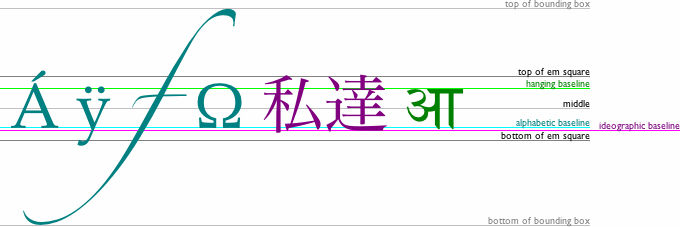

Давайте порисуем
В HTML5 определён элемент <canvas> как «растровый холст, который может быть использован для отображения диаграмм, игровой графики или изображений на лету». Холст — это прямоугольная область на вашей странице, где с помощью JavaScript можно рисовать что вы пожелаете.
| IE | Firefox | Safari | Chrome | Opera | iPhone | Android |
| 7.0+ | 3.0+ | 3.0+ | 3.0+ | 10.0+ | 1.0+ | 1.0+ |
* Internet Explorer поддерживает только с библиотекой explorercanvas. Internet Explorer 9 поддерживает <canvas>.
Как же этот холст выглядит? В действительности, никак. У элемента <canvas> нет собственного контента и рамки.
Невидимый холст
Код выглядит так.
<canvas width="300" height="225"></canvas>Давайте добавим пунктирную рамку, чтобы увидеть, с чем мы имеем дело.
Холст с рамкой
У вас может быть несколько элементов <canvas> на одной странице. Каждый холст будет отображаться в DOM и хранить своё собственное состояние. Если вы добавите каждому холсту атрибут id, то можете получить к ним доступ, как и к любому другому элементу.
Расширим наш код, включив атрибут id.
<canvas id="a" width="300" height="225"></canvas>Теперь легко можно обнаружить элемент <canvas> в DOM.
var a_canvas = document.getElementById("a");Простые фигуры
| IE | Firefox | Safari | Chrome | Opera | iPhone | Android |
| 7.0+ | 3.0+ | 3.0+ | 3.0+ | 10.0+ | 1.0+ | 1.0+ |
* Internet Explorer поддерживает только с библиотекой explorercanvas. Internet Explorer 9 поддерживает фигуры в <canvas>.
Каждый холст изначально пустой. Это скучно! Давайте что-нибудь нарисуем.
Событие onclick вызывает эту функцию:
function draw_b() {
var b_canvas = document.getElementById("b");
var b_context = b_canvas.getContext("2d");
b_context.fillRect(50, 25, 150, 100);
}Первая строка функции не делает ничего особенного, она просто находит элемент <canvas> в DOM.
function draw_b() {
var b_canvas = document.getElementById("b");
var b_context = b_canvas.getContext("2d");
b_context.fillRect(50, 25, 150, 100);
}Каждый холст имеет контекст рисования, в котором и происходят все эти смешные штучки. Как только вы нашли элемент <canvas> в DOM (с помощью document.getElementById() или любым другим способом), вызываете метод getContext(). Необходимо указать строку "2D" в методе getContext().
Спроси профессора Разметкина
☞В. Есть холст 3D?
О. Пока нет. Отдельные производители экспериментируют с собственным трёхмерным API, но ни один из них не стандартизирован. В спецификации HTML5 отмечено: «в будущих версиях данной спецификации, вероятно, будет определён 3D-контекст».
Итак, у вас есть элемент <canvas> и есть контекст рисования, где определены все методы и свойства рисования. Имеется целая группа свойств и методов посвящённых рисованию прямоугольников.
- Свойство fillStyle может быть цветом, рисунком или градиентом (подробнее о градиентах чуть ниже). По умолчанию fillStyle заливает сплошным чёрным цветом, но вы можете установить что угодно. Каждый контекст рисунка помнит свои собственные свойства при открытии страницы, пока вы её не обновите.
- fillRect(x, y, width, height) рисует прямоугольник, заполненный текущим стилем заливки.
- Свойство strokeStyle как и fillStyle может быть цветом, рисунком или градиентом.
- strokeRect(x, y, width, height) рисует прямоугольник с текущим стилем линии. strokeRect не заливается внутри, он просто рисует границы.
- clearRect(x, y, width, height) очищает от пикселей в указанном прямоугольнике.
Спроси профессора Разметкина
☞В. Можно ли «перезагрузить» холст?
О. Да. Установка ширины или высоты для элемента <canvas> сотрёт его содержимое и сбросит все свойства контекста рисования в значения по умолчанию. Вам даже не нужно менять ширину, вы можете просто установить её в текущее значение, например, так:
var b_canvas = document.getElementById("b");
b_canvas.width = b_canvas.width;Вернёмся к предыдущему примеру.
Рисование прямоугольника
var b_canvas = document.getElementById("b");
var b_context = b_canvas.getContext("2d");
b_context.fillRect(50, 25, 150, 100);Вызов метода fillRect() рисует прямоугольник и заполняет его текущим стилем заливки, исходно это чёрный цвет, пока вы его не измените. Прямоугольник задаётся левым верхним углом (50, 25), шириной (150) и высотой (100). Чтобы лучше представить как это работает, давайте посмотрим на систему координат.
Координаты холста
Холст — это двумерная сетка. Координата 0,0 находится в левом верхнем углу холста. Вдоль оси X значения растут к правому краю холста. По оси Y значения растут к нижнему краю холста.

Координаты холста
Координатная сетка была нарисована с помощью <canvas> и включает в себя:
- набор серых вертикальных линий;
- набор серых горизонтальных линий;
- две чёрные горизонтальные линии;
- две чёрные вертикальные линии;
- две маленькие чёрные диагональные линии, которые образуют стрелки;
- две чёрные вертикальные линии;
- две маленькие чёрные диагональные линии, которые образуют вторую стрелу;
- букву «х»;
- букву «у»;
- текст «(0, 0)» вблизи левого верхнего угла;
- текст «(500, 375)» в правом нижнем углу;
- точку в левом верхнем углу и другую в правом нижнем углу.
Для начала нам необходимо определить сам элемент <canvas>, задать ему ширину и высоту, а также id, чтобы мы могли найти его позже.
<canvas id="c" width="500" height="375"></canvas>Также нам нужен скрипт для поиска элемента <canvas> в DOM и получить его контекст рисования.
var c_canvas = document.getElementById("c");
var context = c_canvas.getContext("2d");Теперь мы можем рисовать линии.
Контуры
| IE | Firefox | Safari | Chrome | Opera | iPhone | Android |
| 7.0+ | 3.0+ | 3.0+ | 3.0+ | 10.0+ | 1.0+ | 1.0+ |
* Internet Explorer поддерживает только с библиотекой explorercanvas. Internet Explorer 9 поддерживает <canvas>.
Представьте, что вы рисуете картину чернилами. Вы же не будете начинать сразу с чернил, потому что можете сделать ошибку. Вместо этого вы начнёте рисовать линии и контуры карандашом, а когда будете удовлетворены, обведёте эскиз чернилами.
Каждый холст имеет контуры подобные рисунку карандашом. Вы можете нарисовать что угодно, но это не будет частью готовой работы, пока вы не возьмёте перо и не обведёте ваши контуры чернилами.
Чтобы рисовать прямые линии карандашом, можно использовать следующие два метода:
- moveTo(х, у) перемещает карандаш к указанной начальной точке.
- lineTo(х, у) рисует линии до указанной конечной точки.
Чем чаще вы вызываете moveTo() и lineTo(), тем длиннее получается контур. Это «карандашные» методы — вы можете обращаться к ним так часто, насколько хотите, но вы ничего не увидите на холсте, пока не обратитесь к одному из «чернильных» методов.
Давайте нарисуем серую сетку.
Рисование вертикальных линий
for (var x = 0.5; x < 500; x += 10) {
context.moveTo(x, 0);
context.lineTo(x, 375);
}Рисование горизонтальных линий
for (var y = 0.5; y < 375; y += 10) {
context.moveTo(0, y);
context.lineTo(500, y);
}Все эти методы были «карандашные». На самом деле, на холсте ещё ничего не нарисовано, нам нужны «чернильные» методы, чтобы сделать рисунок видимым.
context.strokeStyle = "#eee";
context.stroke();stroke() является одним из «чернильных» методов. Он принимает сложный контур, заданный всеми вызовами moveTo() и lineTo() и рисует его на холсте. strokeStyle управляет цветом линии. Вот результат.
Спроси профессора Разметкина
☞В. Почему мы начинаем x и y c 0.5, а не с 0?
О. Представьте каждый пиксель как большой квадрат. Все целочисленные координаты (0, 1, 2, ...) являются углами этих квадратов. Если вы рисуете однопиксельную линию между целыми координатами, она будет перекрывать противоположные стороны пиксельного квадрата, в результате будет нарисована ширина два пикселя. Чтобы нарисовать линию шириной только в один пиксель, необходимо сместить координаты на 0.5 перпендикулярно к направлению линии.
К примеру, если вы попытаетесь нарисовать линию от (1, 0) до (1, 3), браузер будет рисовать линию с перекрытием в полпикселя по обе стороны от x=1. На экране невозможно отобразить половину пикселя, поэтому линия будет расширена для покрытия двух пикселей.
Если вы попробуете нарисовать линию от (1.5, 0) до (1.5, 3), браузер нарисует линию с перекрытием полпикселя на каждой стороне от x=1.5, что в результате даёт истинную однопиксельную линию.
Спасибо Джейсону Джонсону за эти графики.
Теперь нарисуем горизонтальную стрелку. Все линии и кривые на контуре нарисованы тем же цветом (или градиентом — да, мы скоро до него доберемся). Мы хотим нарисовать стрелку другим цветом — чёрным, а не серым, так что мы должны начать новый контур.
Новый контур
context.beginPath();
context.moveTo(0, 40);
context.lineTo(240, 40);
context.moveTo(260, 40);
context.lineTo(500, 40);
context.moveTo(495, 35);
context.lineTo(500, 40);
context.lineTo(495, 45);Вертикальная стрелка выглядит почти так же. Поскольку она того же цвета, что и горизонтальная стрелка, нам не нужно начинать ещё один новый контур. Две стрелки будут частью одного и того же контура.
Не новый контур
context.moveTo(60, 0);
context.lineTo(60, 153);
context.moveTo(60, 173);
context.lineTo(60, 375);
context.moveTo(65, 370);
context.lineTo(60, 375);
context.lineTo(55, 370);Я сказал, что эти стрелки будут чёрными, но strokeStyle установлен как серый (fillStyle и strokeStyle не сбрасываются, когда вы начинаете новый контур). Это нормально, потому что мы просто запустили серию «карандашных» методов. Но прежде чем нарисовать реально в «чернилах», мы должны установить strokeStyle чёрным. В противном случае эти две стрелки будут серыми и мы вряд ли их заметим. Следующие строки изменяют цвет на чёрный и рисуют линии на холсте.
context.strokeStyle = "#000";
context.stroke();Вот результат.
Текст
| IE | Firefox | Safari | Chrome | Opera | iPhone | Android |
| 7.0+ | 3.0+ | 3.0+ | 3.0+ | 10.0+ | 1.0+ | 1.0+ |
* Internet Explorer поддерживает только с библиотекой explorercanvas. Internet Explorer 9 поддерживает текст в <canvas>.
* Mozilla Firefox 3.0 требует костыль для совместимости.
В дополнение к рисованию линий на холсте, вы также можете нарисовать текст. В отличие от текста окружающей веб-страницы, здесь нет блочной модели. Это означает, что нет знакомых из CSS техник вёрстки: нет плавающих элементов, нет отступов, нет полей, нет переноса слов (хотя вы можете считать всё это хорошей вещью). Вы можете установить несколько атрибутов шрифта, выбрать точку на холсте и нарисовать текст. Следующие атрибуты шрифта доступны в контексте рисования.
- font может содержать всё, что вы бы добавили в CSS-свойство font. Включает стиль шрифта, насыщенность, размер, межстрочное расстояние и семейство гарнитур.
- textAlign управляет выравниванием текста. Похоже на CSS-свойство text-align, но не идентично ему. Возможные значения: start, end, left, right и center.
- textBaseline говорит, где рисуется текст относительно начальной точки. Возможные значения: top, hanging, middle, alphabetic, ideographic и bottom.
Атрибут textBaseline хитрый, потому что сам текст такой (к тексту на английском это не относится, но вы ведь можете нарисовать любой символ Юникода и сам Юникод хитрый). Спецификация HTML5 объясняет различия между базовыми линиями.
Верх площадки em (top) это примерно верх глифов в шрифте; выносная базовая линия (hanging) там, где привязаны некоторые глифы вроде आ; середина (middle) это половина между верхом и низом площадки em; алфавитная базовая линия (alphabetic) проходит там, где привязаны символы вроде Á, ÿ, f и Ω; идеографическая базовая линия (ideographic) располагается там, где привязаны символы вроде 私 и 達; низ площадки em это примерно низ глифов в шрифте. Верх и низ ограничивающего прямоугольника может быть далеко от базовой линии из-за того, что глифы выходят далеко за пределы прямоугольника em.

Для простых алфавитов вроде английского вы можете без опасений придерживаться значений top, middle или bottom у свойства textBaseline.
Давайте нарисуем какой-нибудь текст! Текст внутри холста наследует размер шрифта и стиль самого элемента <canvas>, но вы можете переопределить эти значения, установив свойства шрифта в контексте рисования.
Изменение стиля шрифта
context.font = "bold 12px sans-serif";
context.fillText("x", 248, 43);
context.fillText("y", 58, 165);Метод fillText() рисует собственно текст.
Рисование текста
context.font = "bold 12px sans-serif";
context.fillText("x", 248, 43);
context.fillText("y", 58, 165);Спроси профессора Разметкина
☞В. Могу я использовать относительные размеры шрифтов для рисования текста на холсте?
О. Да. Как и любой другой HTML-элемент на странице, <canvas> сам вычислит размер шрифта на основе правил CSS. Если вы установите свойство context.font на относительный размер шрифта, такой как 1.5em или 150%, ваш браузер умножит его на вычисленный размер шрифта самого элемента <canvas>.
Для текста в левом верхнем углу, скажем, хочу, чтобы верх текста был при y=5. Но я ленивый, не хочу измерять высоту текста и вычислять базовую линию. Вместо этого я установлю textBaseline как top и укажу координаты левого верхнего угла окружающего текст прямоугольника.
context.textBaseline = "top";
context.fillText("( 0 , 0 )", 8, 5);Теперь текст в правом нижнем углу. Скажем, я хочу в правом нижнем углу текст, который будет в точке с координатами (492, 370) — это всего несколько пикселей от правого нижнего угла холста — но я не хочу измерять ширину или высоту текста. Я могу установить textAlign как right и textBaseline как bottom, а затем вызвать fillText() с координатами правого нижнего угла прямоугольника ограничивающего текст.
context.textAlign = "right";
context.textBaseline = "bottom";
context.fillText("( 500 , 375 )", 492, 370);И вот результат:
Ой! Мы забыли точки в углах. Мы увидим, как рисовать окружности чуть позже. Пока же я немного схитрю и нарисую их в виде прямоугольников.
Рисуем две «точки»
context.fillRect(0, 0, 3, 3);
context.fillRect(497, 372, 3, 3);И это весь написанный текст! Вот финальный результат.
Градиенты
| IE | Firefox | Safari | Chrome | Opera | iPhone | Android | |
| Линейный | 7.0+ | 3.0+ | 3.0+ | 3.0+ | 10.0+ | 1.0+ | 1.0+ |
| Радиальный | 9.0+ | 3.0+ | 3.0+ | 3.0+ | 10.0+ | 1.0+ | 1.0+ |
* Internet Explorer 7 и 8 поддерживает только с библиотекой explorercanvas. Internet Explorer 9 поддерживает градиенты <canvas>.
Ранее в этой главе вы узнали, как нарисовать прямоугольник заполненный цветом, затем как обводить линию заданным цветом. Но формы и линии не ограничены сплошным цветом, вы можете воспользоваться всеми видами магии с градиентами. Давайте посмотрим на примере.

Разметка выглядит так же, как любой другой холст.
<canvas id="d" width="300" height="225"></canvas>Вначале мы должны найти элемент <canvas> и его контекст рисования.
var d_canvas = document.getElementById("d");
var context = d_canvas.getContext("2d");После того как мы задали контекст, можем определить градиент. Градиент это плавный переход между двумя или более цветами. Контекст рисования холста поддерживает два типа градиента:
- createLinearGradient(x0, y0, x1, y1) рисует вдоль линии от (x0, y0) до (x1, y1);
- createRadialGradient(x0, y0, r0, x1, y1, r1) рисует по конусу между двумя окружностями. Первые три параметра определяют начальную окружность с центром (x0, y0) и радиусом r0. Последние три параметра представляют последнюю окружность с центром (x1, y1) и радиусом r1.
Давайте сделаем линейный градиент. Градиенты могут быть любого размера, но я сделаю этот градиент шириной 300 пикселей, как и холст.
Создание градиентного объекта
var my_gradient = context.createLinearGradient(0, 0, 300, 0);Поскольку значения у второго и четвёртого параметра равны 0, этот градиент будет заполнен слева направо.
После того как мы получили градиентный объект, мы можем определить цвета градиента. Градиент имеет два или более цвета остановки, которые могут быть в любом месте вдоль градиента. Чтобы добавить цвет остановки, необходимо указать его позицию вдоль градиента, она может быть от 0 до 1.
Давайте определим градиент от чёрного цвета к белому.
my_gradient.addColorStop(0, "black");
my_gradient.addColorStop(1, "white");Определение градиента не рисует что-либо на холсте, это просто объект, спрятанный где-то в памяти. Чтобы нарисовать градиент, установите fillStyle в градиент и нарисуйте фигуру вроде прямоугольника или линии.
Стиль заполнения градиентом
context.fillStyle = my_gradient;
context.fillRect(0, 0, 300, 225);И вот результат.
Предположим, вы хотите получить градиент сверху вниз. Когда вы создаёте градиентный объект, оставьте значения x (первый и третий параметры) постоянными и сделайте значения y (второй и четвертый параметры) в диапазоне от 0 до высоты холста.
Значения x равны 0, значения y меняются
var my_gradient = context.createLinearGradient(0, 0, 0, 225);
my_gradient.addColorStop(0, "black");
my_gradient.addColorStop(1, "white");
context.fillStyle = my_gradient;
context.fillRect(0, 0, 300, 225);И вот результат:
Вы также можете сделать градиент по диагонали.
Оба значения x и y меняются
var my_gradient = context.createLinearGradient(0, 0, 300, 225);
my_gradient.addColorStop(0, "black");
my_gradient.addColorStop(1, "white");
context.fillStyle = my_gradient;
context.fillRect(0, 0, 300, 225);Вот результат:
Изображения
| IE | Firefox | Safari | Chrome | Opera | iPhone | Android |
| 7.0+ | 3.0+ | 3.0+ | 3.0+ | 10.0+ | 1.0+ | 1.0+ |
* Internet Explorer поддерживает только с библиотекой explorercanvas. Internet Explorer 9 поддерживает изображения в <canvas>.
Контекст рисования холста определяет метод drawImage() для вывода изображений. Этот метод может иметь три, пять или девять аргументов.
- drawImage(image, dx, dy) принимает изображение и выводит его на холсте. Заданные координаты (dx, dy) соответствуют левому верхнему углу изображения, координаты (0, 0) выводят изображения в левом верхнем углу холста.
- drawImage(image, dx, dy, dw, dh) принимает изображение, масштабирует его до ширины dw и высоты dh и выводит в точке с координатами (dx, dy).
- drawImage(image, sx, sy, sw, sh, dx, dy, dw, dh) принимает изображение, обрезает его до прямоугольника (sx, sy, sw, sh), масштабирует до размеров (dw, dh) и выводит в точке с координатами (dx, dy).
Спецификация HTML5 поясняет параметры drawImage():
Исходный прямоугольник — это прямоугольник (в пределах исходного изображения), у которого углы это четыре точки (sx, sy), (sx+sw, sy), (sx+sw, sy+sh), (sx, sy+sh).
Прямоугольник назначения это прямоугольник (в холсте), у которого углы это четыре точки (dx, dy), (dx+dw, dy), (dx+dw, dy+dh), (dx, dy+dh).
Чтобы нарисовать изображение на холсте, у вас должно быть изображение. Это может быть существующий элемент <img> или вы можете создать объект Image() через JavaScript. В любом случае вы должны убедиться, что изображение полностью загружено, прежде чем его можно нарисовать на холсте.
Если вы используете существующий элемент <img>, то можете смело нарисовать его на холсте через событие window.onload.
Использование <img>
<img id="cat" src="images/cat.png" alt="Спящий кот" width="177" height="113">
<canvas id="e" width="177" height="113"></canvas>
<script>
window.onload = function() {
var canvas = document.getElementById("e");
var context = canvas.getContext("2d");
var cat = document.getElementById("cat");
context.drawImage(cat, 0, 0);
};
</script>Если вы создаёте объект полностью на JavaScript, то можете спокойно нарисовать изображение на холсте во время события Image.onload.
Использование объекта Image()
<canvas id="e" width="177" height="113"></canvas>
<script>
var canvas = document.getElementById("e");
var context = canvas.getContext("2d");
var cat = new Image();
cat.src = "images/cat.png";
cat.onload = function() {
context.drawImage(cat, 0, 0);
};
</script>Необязательные третий и четвертый параметры в методе drawImage() управляют масштабом изображения. То же самое изображение масштабировано до половины его ширины и высоты и повторяется с разными координатами в пределах одного холста.
Вот скрипт который производит «многокошачий» эффект.
cat.onload = function() {
for (var x = 0, y = 0;
x < 500 && y < 375;
x += 50, y += 37) {
context.drawImage(cat, x, y, 88, 56);
}
};Все эти усилия вызывает законный вопрос: почему вы хотите рисовать изображение в первую очередь на холсте? Что дают дополнительные сложности при выводе изображения на холсте по сравнению с элементом <img> или некоторыми правилами CSS? Даже «многокошачий» эффект может быть сделан с десятью перекрывающимися элементами <img>.
Простой ответ в том, что вы также можете нарисовать текст на холсте. График координат включает текст, линии и формы. Более сложные диаграммы легко могут использовать drawImage() для включения иконок, спрайтов или других графических элементов.
Что насчёт IE?
Microsoft Internet Explorer до версии 9.0 не поддерживает Canvas API (IE9 полностью поддерживает Canvas API). Тем не менее, старые версии Internet Explorer поддерживает фирменную технологию Майкрософт, называемую VML, которая может делать многие из тех же вещей, что и элемент <canvas>. Так и родился excanvas.js.
Explorercanvas (excanvas.js) является JavaScript-библиотекой с открытым исходным кодом, которая реализует API Canvas в Internet Explorer. Чтобы её использовать, включите следующий <script> в верхнюю часть страницы.
<!DOCTYPE html>
<html>
<head>
<meta charset="utf-8">
<title>Dive Into HTML5</title>
<!--[if IE]>
<script src="excanvas.js"></script>
<![endif]-->
</head>
<body>
...
</body>
</html>Фрагмент <!--[if lt IE 9]> и <![endif]--> это условные комментарии. Internet Explorer интерпретирует их следующим образом: «если текущий браузер это Internet Explorer до версии 9 (но не включая её), тогда выполнить этот блок». Любой другой браузер будет рассматривать весь блок как комментарий HTML. Конечным результатом является то, что Internet Explorer скачает скрипт excanvas.js и выполнит его, а другие браузеры будут игнорировать скрипт вообще (не будут его скачивать, выполнять или ещё что-нибудь делать). Это делает ваши страницы загружаемыми быстрее в тех браузерах, которые поддерживают Canvas API изначально.
Как только вы включите excanvas.js в <head> вашей страницы, вам не нужно ничего делать для настройки Internet Explorer. Просто включите элементы <canvas> в разметку или создайте их динамически через JavaScript. Следуйте инструкциям в этой главе, чтобы отобразить контекст элемента <canvas>, и вы можете рисовать фигуры, текст и картинки.
Ну..., не совсем. Есть несколько ограничений.
- Градиенты могут быть только линейными, радиальные градиенты не поддерживаются.
- Картинки должны повторяться в обоих направлениях.
- Области кадрирования не поддерживаются.
- Непропорциональное масштабирование работает некорректно с контурами.
- Это медленно. Это не должно вызвать шок у кого-либо, так как анализатор JavaScript в Internet Explorer с самого начала медленнее, чем в других браузерах. Как только вы начинаете рисовать сложные составные фигуры с помощью JavaScript-библиотеки, которая переводит команды в полностью другие технологии, всё начинает увязать в трясине. Вы не заметите снижение производительности на простых примерах вроде рисунка с несколькими линиями и преобразованием изображения, но увидите его сразу, как только начнёте делать анимацию на холсте и другие сумасшедшие штуки.
Существует ещё одно предостережение об использовании excanvas.js и это проблема с которой я столкнулся при создании примеров в этой главе. ExplorerCanvas инициализирует собственный интерфейс лжехолста автоматически, когда вы включаете скрипт excanvas.js в вашу HTML-страницу. Но это не означает, что Internet Explorer готов к использованию сразу же. В определённых ситуациях вы можете получить состояние, когда интерфейс лжехолста готов к использованию, но не совсем. Основным симптомом этого состояния является то, что Internet Explorer будет жаловаться всякий раз, что «объект не поддерживает это свойство или метод», когда вы попытаетесь сделать что-нибудь с элементом <canvas>, подобно получению контекста рисования.
Самое простое решение данной проблемы это отложить все манипуляции с холстом, пока не сработает событие onload. Это может занять какое-то время — если ваша страница содержит много изображений или видео, они приведут к задержке события onload, но это даст ExplorerCanvas время для работы над своей магией.
Заключение, живой пример
Уголки это многовековая настольная игра с множеством разных вариантов. В этом примере я создал версию для одного игрока с девятью фишками и полем 9х9. В начале игры фишки заполняют поле 3х3 в левом нижнем углу доски. Цель игры в том, чтобы переместить все фишки в поле 3х3 в правый верхний угол доски за наименьшее число ходов.
В Уголках существует два типа правильных перемещений.
- Взять фишку и переместить её на любую соседнюю пустую клетку — это одна из клеток, в которой нет фишек. Соседняя клетка это непосредственно север, юг, восток, запад, северо-запад, северо-восток, юго-запад или юго-восток от текущей позиции фишки. Доска не может поворачиваться. Если фишка находится в самом левом столбце, она не может двигаться на запад, северо-запад или юго-запад. Если фишка находится в самой нижней линии, она не может двигаться на юг, юго-восток или юго-запад.
- Взять фишку и перепрыгнуть через соседнюю фишку, также возможно повторить. Т. е. вы перепрыгиваете через соседнюю фишку, затем перепрыгиваете через другую ближайшую фишку в новую позицию, что считается одним ходом. Так как целью является сведение к минимуму общего числа ходов, правильная стратегия в Уголках включает в себя продумывание, а затем использование длинных цепочек чередующихся фишек так, чтобы другие фишки могли долго перепрыгивать через них.
Вот сама игра.
Как это работает? Я рад, что вы спросили. Не буду показывать весь код, вы можете посмотреть его целиком по этому адресу. Я пропущу большую часть кода самой игры, но хочу выделить несколько фрагментов кода, которые на деле занимаются рисованием на холсте и отвечают на щелчки мыши по нему.
Во время загрузки страницы мы инициализируем игру, установив размеры самого <canvas> и сохраняя указатель на его контекст рисования.
gCanvasElement.width = kPixelWidth;
gCanvasElement.height = kPixelHeight;
gDrawingContext = gCanvasElement.getContext("2d");Затем мы делаем то, что вы ещё не видели: добавим отслеживание события щелчка для элемента <canvas>.
gCanvasElement.addEventListener("click", halmaOnClick, false);Функция halmaOnClick() вызывается, когда пользователь щёлкает где-нибудь внутри холста. Его аргумент это объект MouseEvent, который содержит информацию о том, где пользователь щёлкал.
function halmaOnClick(e) {
var cell = getCursorPosition(e);
// Остальное это просто логика игры
for (var i = 0; i < gNumPieces; i++) {
if ((gPieces[i].row == cell.row) &&
(gPieces[i].column == cell.column)) {
clickOnPiece(i);
return;
}
}
clickOnEmptyCell(cell);
}Следующий шаг это получить объект MouseEvent и рассчитать, по какой клетке на доске игры только что щёлкнули. Доска Уголков занимает весь холст, поэтому каждый щелчок происходит в пределах доски. Нам просто нужно выяснить, где. Это сложно, потому что события мыши осуществляется по-разному почти во всех браузерах.
function getCursorPosition(e) {
var x;
var y;
if (e.pageX != undefined && e.pageY != undefined) {
x = e.pageX;
y = e.pageY;
}
else {
x = e.clientX + document.body.scrollLeft +
document.documentElement.scrollLeft;
y = e.clientY + document.body.scrollTop +
document.documentElement.scrollTop;
}На данный момент у нас есть координаты x и y по отношению к документу (т. е., всей HTML-страницы). Это не совсем полезно. Мы хотим координаты относительно холста.
x -= gCanvasElement.offsetLeft;
y -= gCanvasElement.offsetTop;Теперь у нас есть координаты x и y, которые относятся к холсту. То есть, если в этой точке х это 0 и у это 0, мы знаем, что пользователь просто щёлкнул на левый верхний пиксель холста.
Отсюда мы можем рассчитать, по какой клетке пользователь щёлкнул, а затем действовать соответственно.
var cell = new Cell(Math.floor(y/kPieceHeight),
Math.floor(x/kPieceWidth));
return cell;
}Вот так так! События мыши трудны. Но вы можете использовать ту же логику во всех ваших собственных приложениях с холстом. Помните: щелчок мыши → координаты относительно документа → координаты относительно холста → код конкретного приложения.
Хорошо, давайте посмотрим на основные типовые задачи рисования. Потому что графика это так просто, что я решил очищать и перерисовывать доску в полном объеме каждый раз, когда что-нибудь изменяется в игре. Это не является строго обязательным. Контекст рисования холста будет сохранять всё, что вы ранее нарисовали на нём, даже если пользователь прокручивает холст за пределы видимости или выбирает другую вкладку, а затем возвращается позже назад. Если вы разрабатываете приложение с более сложной графикой (например, аркадные игры), вы можете оптимизировать производительность путем отслеживания тех регионов холста, которые «загрязнились» и перерисовывать только их. Но это выходит за рамки данной книги.
gDrawingContext.beginPath();
/* вертикальные линии */
for (var x = 0; x <= kPixelWidth; x += kPieceWidth) {
gDrawingContext.moveTo(0.5 + x, 0);
gDrawingContext.lineTo(0.5 + x, kPixelHeight);
}
/* горизонтальные линии */
for (var y = 0; y <= kPixelHeight; y += kPieceHeight) {
gDrawingContext.moveTo(0, 0.5 + y);
gDrawingContext.lineTo(kPixelWidth, 0.5 + y);
}
/* рисуем их! */
gDrawingContext.strokeStyle = "#ccc";
gDrawingContext.stroke();Самое интересное начинается тогда, когда мы идём рисовать каждую фишку отдельно. Фишка представляет собой окружность, которую мы прежде не рисовали. Кроме того, если пользователь выберет фишку в ожидании перемещения, мы хотим нарисовать фишку как заполненную окружность. Здесь аргумент p соответствует фишке, которая имеет свойства строки и столбца, обозначающих текущее местоположение фишки на доске. Мы используем некоторые игровые константы (столбец, строка) и переводим их в относительные координаты холста (х, у), затем рисуем окружность, а затем (если фишка выбрана) заполняем окружность цветом.
function drawPiece(p, selected) {
var column = p.column;
var row = p.row;
var x = (column * kPieceWidth) + (kPieceWidth/2);
var y = (row * kPieceHeight) + (kPieceHeight/2);
var radius = (kPieceWidth/2) - (kPieceWidth/10);Вот и вся специфичная игровая логика. Теперь у нас есть координаты (х, у) относительно холста для получения центра окружности, которую мы хотим нарисовать. В API Canvas нет метода circle(), но есть метод arc(). И действительно, что есть окружность, как не замкнутая дуга? Помните основы геометрии? Метод arc() задаёт центральную точку (х, у), радиус, начальный и конечный угол (в радианах) и флаг направления (false по часовой стрелке, true против часовой стрелки). Вы можете использовать модуль Math встроенный в JavaScript для расчёта радиан.
gDrawingContext.beginPath();
gDrawingContext.arc(x, y, radius, 0, Math.PI * 2, false);
gDrawingContext.closePath();Но подождите! Ничего ещё не нарисовано. Метод arc() подобен moveTo() и lineTo() и относится к «карандашным» методам. Чтобы действительно нарисовать окружность, мы должны установить strokeStyle и вызвать метод stroke() для обводки «чернилами».
gDrawingContext.strokeStyle = "#000";
gDrawingContext.stroke();Что если фишка выбрана? Мы можем повторно использовать тот же созданный контур, чтобы нарисовать границу фишки и заполнить окружность цветом.
if (selected) {
gDrawingContext.strokeStyle = "#000";
gDrawingContext.fill();
}Вот теперь всё значительно лучше. Остальная часть программы это игровая логика — различия между правильными и неверными движениями, отслеживание количества ходов, определение, закончилась ли игра. С девятью окружностями, несколькими линиями и одним обработчиком onclick мы создали всю игру на <canvas>. Ура!
Дальнейшее чтение
- Руководство по Canvas в Mozilla Developer Center
- HTML5 canvas — the basics
- The canvas element в черновике стандарта HTML5
- Internet Explorer 9 Guide for Developers: HTML5 canvas element

Все материалы сайта доступны по лицензии Creative Commons «Attribution-NonCommercial» («Атрибуция — Некоммерческое использование») 4.0 Всемирная, если не указано иное.